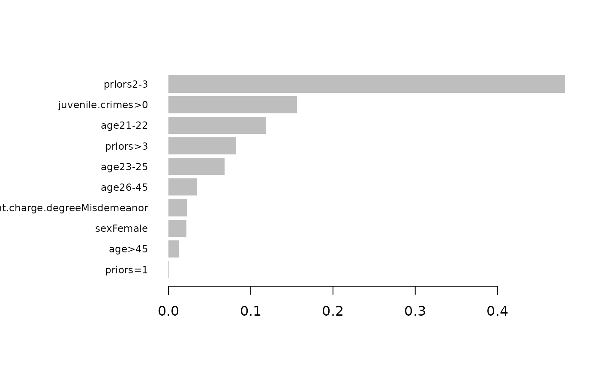
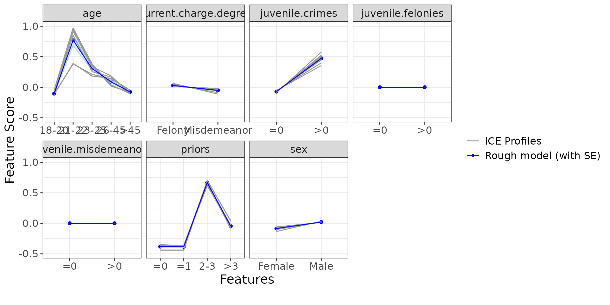
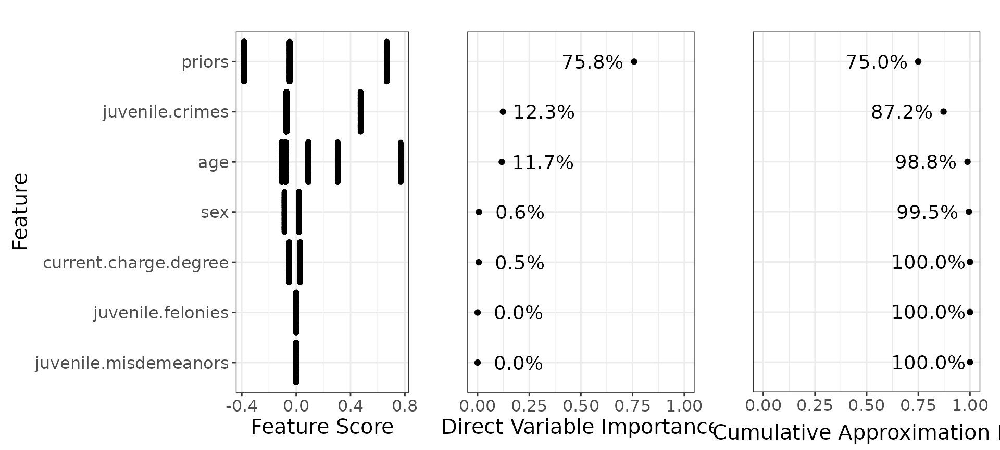
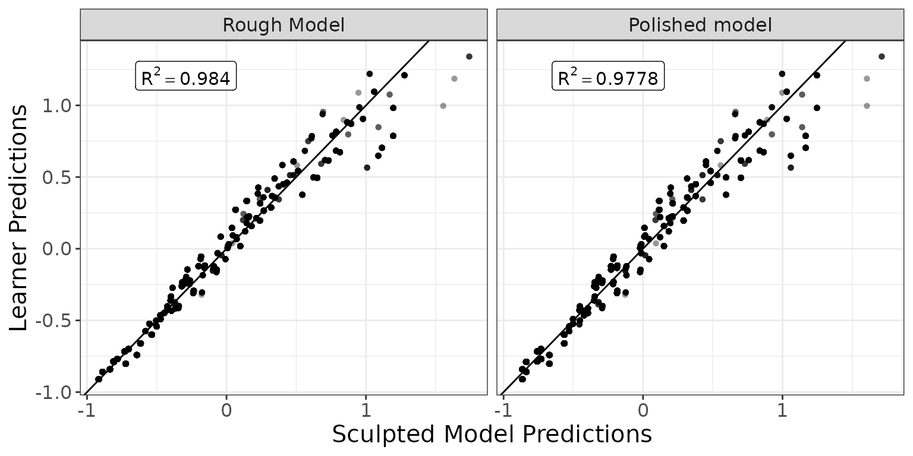

Binary Response
binary.RmdData preparation
Download compas_test.csv and
compas_train.csv at https://github.com/corels/corels/tree/master/data
and read it in R.
You can use the following code to do this:
train <- read.csv("https://raw.githubusercontent.com/corels/corels/master/data/compas_train.csv")
test <- read.csv("https://raw.githubusercontent.com/corels/corels/master/data/compas_test.csv")In this dataset, recidivate.within.two.years is the
binary response that we want to predict, the other columns are
features.
response <- "recidivate.within.two.years"
covariates <- c("sex", "age", "juvenile.felonies", "juvenile.misdemeanors", "juvenile.crimes", "priors", "current.charge.degree")All of the features are factors so let’s convert them:
train[covariates] <- lapply(train[covariates], as.factor)
# reorder levels
levels(train$priors) <- c("=0", "=1", "2-3", ">3")
levels(train$age) <- c("18-20", "21-22", "23-25", "26-45", ">45")
test[covariates] <- lapply(test[covariates], as.factor)
# reorder levels
levels(test$priors) <- c("=0", "=1", "2-3", ">3")
levels(test$age) <- c("18-20", "21-22", "23-25", "26-45", ">45")Model Sculpting
Build a base model
Firstly, check the NAs:
anyNA(train)
#> [1] FALSESecondly, check zero variance columns (all columns are factors):
Now let’s build a strong learner via xgboost (again with already predefined parameters):
requireNamespace("xgboost")
#> Loading required namespace: xgboost
set.seed(567)
est <- xgboost::xgb.train(
params = list(
booster = "gbtree",
objective = "binary:logistic",
eta = 0.03,
gamma = 0.75,
max_depth = 2,
min_child_weight = 15,
colsample_bytree = 1,
subsample = 0.5
),
nrounds = 100,
data = xgboost::xgb.DMatrix(
data = model.matrix(~ . - 1, data = train[covariates]),
label = train[[response]]
),
verbose = 0,
nthread = 2
)Here you can see the variable importances based on xgboost:
xgboost::xgb.plot.importance(xgboost::xgb.importance(model = est))
Build a rough model
Let’s sculpt this xgboost model.
Firstly, we need to define a prediction function that takes data as input and returns predictions based on the trained model (in this case, the xgboost above).
For a binary response, it is worth to sculpt the model on the
log-odds scale instead of the probability scale since the xgboost is
built in the log-odds scale as well (see parameter
objective = "binary:logistic").
xgb_pred <- function(x) {
probs <- predict(est, newdata = model.matrix(~ . - 1, data = x))
log(probs / (1 - probs)) # convert to log of odds
}Secondly, we need to generate product marginals, a grid of values that is sampled independently per each column from the original dataset.
pm <- sample_marginals(
dat = train[covariates], # generate product marginals based on original training data
n = 10000, # size of the grid
seed = 372 # for exact reproducibility
)We will sculpt the model using the generated product marginals:
rough_sculpture <- sculpt_rough(
dat = pm,
model_predict_fun = xgb_pred,
n_ice = 10, # number of ICE curves - increasing this number may increase the stability of the sculpture
seed = 5 # for exact reproducibility
)Let’s display the ICE and PDP curves to understand how the individual features influence the model. Remember that y-axis (“Feature Score”) describes the log of odds.
ip <- g_ice(rough_sculpture)
ip$discrete + ggplot2::theme(text = ggplot2::element_text(size = 15))
Below we can see the direct variable importance:

You can compare this with the variable importances generated by the xgboost.
Build a polished model
Let’s jump to polished model now, using only the top 4 features:
polished_sculpture <- sculpt_polished(
rough_sculpture,
vars = c("priors", "juvenile.crimes", "age", "sex")
)Compare results
Let’s compare the predictions of the original model vs sculpted models ( would mean exact match to the xgboost predictions).
g_additivity(
sp = list(predict(rough_sculpture, pm), predict(polished_sculpture, pm)),
lp = xgb_pred(pm),
descriptions = c("Rough Model", "Polished model"),
cex = 4
) +
ggplot2::theme(text = ggplot2::element_text(size = 15))
Test dataset
Finally, below we compare the performance of the model (using quadratic loss):
R2q <- function(y, y_hat) {
metrics_R2(score_fun = "score_quadratic", y = y, y_hat = y_hat)
}Remember that the predictions refer to the log of odds. To convert this to probabilities, we need to transform them:
inv.logit <- function(x) 1 / (1 + exp(-x))
metrics_test <- data.frame(
Model = c(
"Strong learner",
"Rough model",
"Polished model"
),
R2 = c(
R2q(test[[response]], inv.logit(xgb_pred(test[covariates]))),
R2q(test[[response]], inv.logit(predict(rough_sculpture, newdata = test[covariates]))),
R2q(test[[response]], inv.logit(predict(polished_sculpture, newdata = test[covariates])))
)
)
knitr::kable(metrics_test, align = "lc")| Model | R2 |
|---|---|
| Strong learner | 0.1604679 |
| Rough model | 0.1598891 |
| Polished model | 0.1571700 |
Since the “Strong learner” is the only model with interactions, the table above suggests that the interactions are not significant as the performance of the “Rough model” is almost the same.
What is more, using the “Polished model” with only 4 selected features further reduces the model complexity without any significant performance loss.